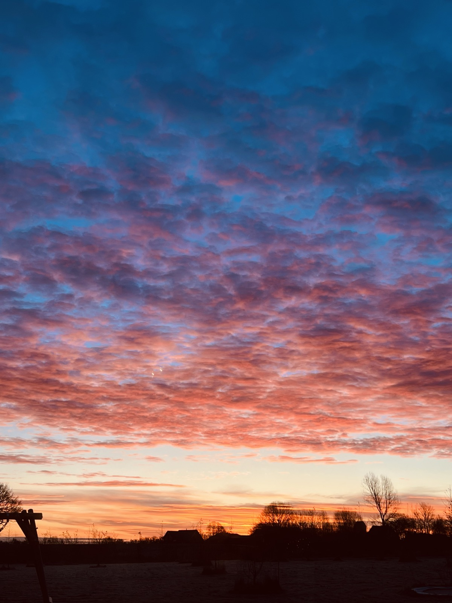
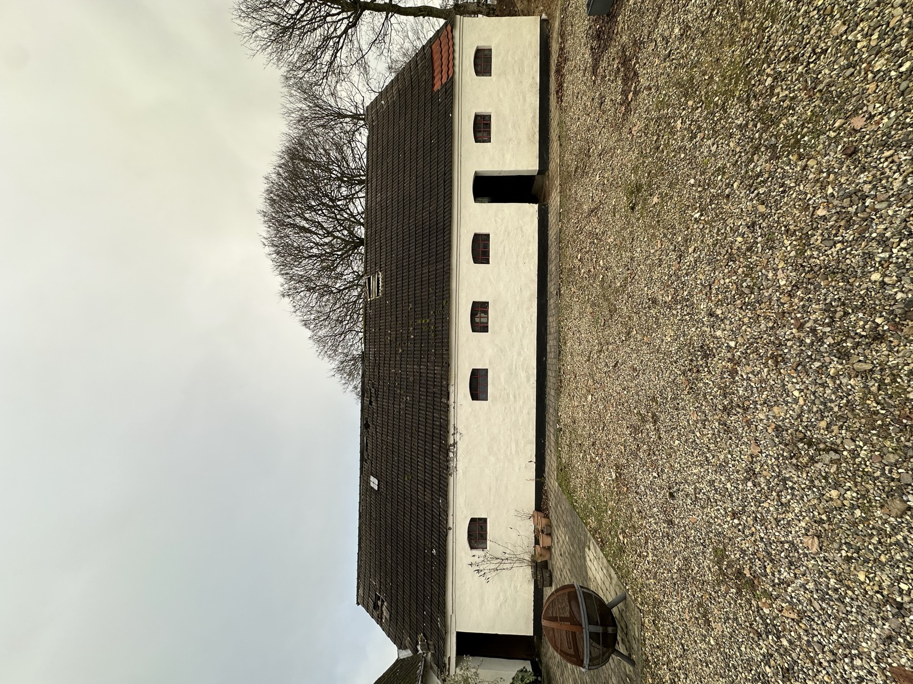
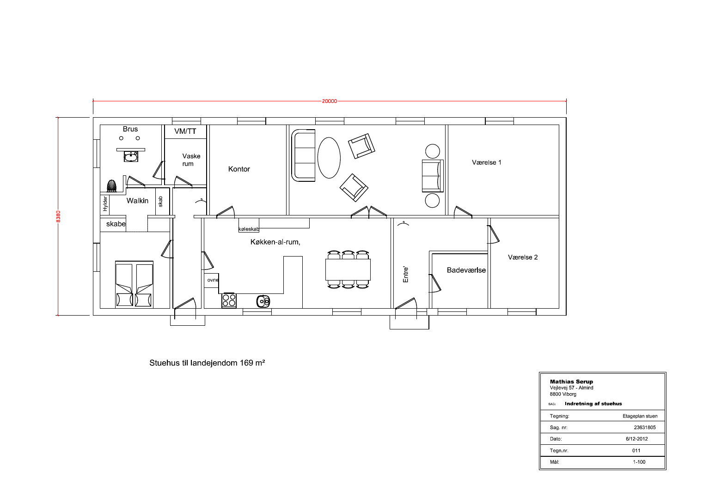
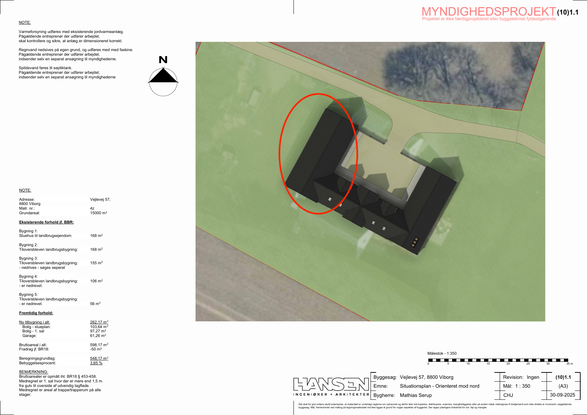
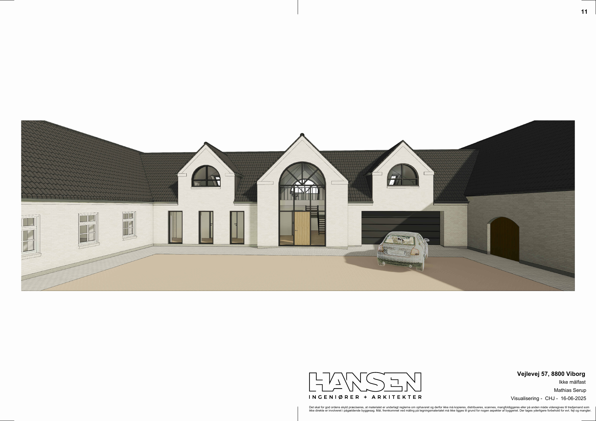
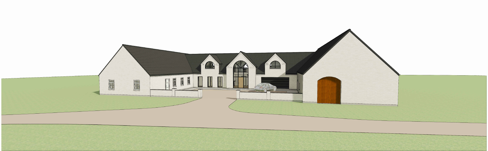
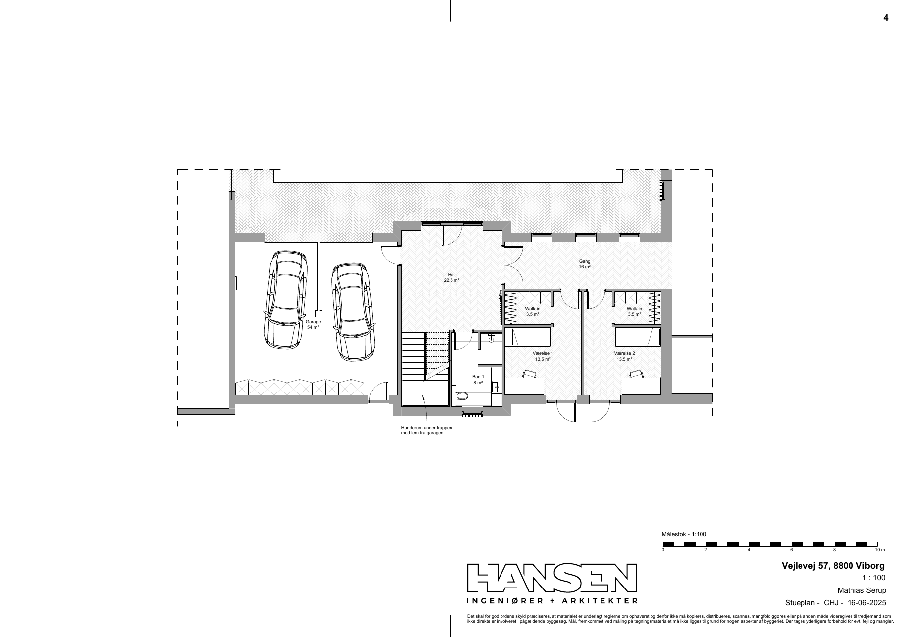
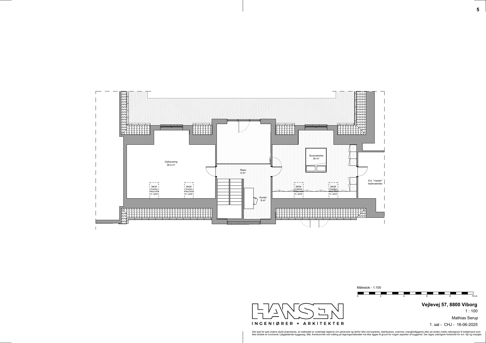

Om ejendommen
Vejlevej 57 er en nedlagt landbrugsejendom i Almind sogn mellem Hald Ege og Rindsholm, godt 11 km (13 minutter) syd for Viborg centrum. Stuehuset er opført i 1883 i mursten med cementstenstag og er siden 2013 renoveret fra bunden: nyt støbt gulv med gulvvarme i hele huset, ny el- og VVS-installation, jordvarmeanlæg, HTH-køkken, nye badeværelser og isolerede gipsvægge og -lofter. I 2018 blev der etableret trappe til en TV-stue på førstesalen (ca. 30 m² med skråvægge), og udhuset blev sandblæst og malet.
Ejendommen ligger frit med udsigt over marker og har eftermiddags- og aftensol over gårdspladsen. Grunden på ca. 1,5 ha giver plads til dyrehold, køkkenhave, legeplads og værksted – og de gamle driftsbygninger er ryddet, så der er frit spillerum til nyt.
Det får du
- Stuehus på 168 m² (BBR) med åbent køkken-alrum, stue, kontor, soveværelse med walk-in, to børneværelser, badeværelse, bruserum/WC og vaskerum
- TV-stue på førstesalen, ca. 30 m² med skråvægge, med trappe fra 2018 (indgår ikke i BBR's boligareal)
- Jordvarmeanlæg CTC EcoHeat 410 (10 kW) fra 2015 – lav varmeudgift og ingen olie/gas
- Gulvvarme i hele stueplan, LED-spots, nye indvendige døre
- HTH-køkken (2015) og to nyere badeværelser
- Ca. 1,5 ha jord i landzone – bebyggelsesprocent under 4 %
- Grusbelagt gårdsplads med perlesten, ny stabilgrus hvor de gamle udhuse stod
- Færdigtegnet tilbygningsprojekt på 234 m² (bolig + integreret garage) fra Hansen Ingeniører + Arkitekter, myndighedsprojekt 2025 – klar til ansøgning om byggetilladelse
Godt at vide
- Ejendommen er sat til salg gennem RealMæglerne helm | binder, Viborg (formidlingsaftale august 2026). Officiel salgsopstilling, tilstandsrapport, el-rapport og energimærke udarbejdes af mægler.
- Denne side er sælgers egen præsentation og prisoplæg – tal og fakta er samlet fra BBR, tinglysning, byggesag og offentlige datakilder (se Kilder).
- Landejendom uden landbrugspligt-registrering i BBR (stuehus til landbrugsejendom, kode 110). Køber bør afklare status hos mægler/kommune.
- Vand fra Almind Kirkeby Vandværk og eget nedsivningsanlæg/septiktank – typisk for ejendomme i det åbne land.


Fakta
| Ejendom | |
|---|---|
| Adresse | Vejlevej 57, 8800 Viborg |
| Matrikel | 4z, Almind By, Almind |
| Kommune / sogn | Viborg Kommune (791) / Almind sogn |
| Ejendomstype | Stuehus til landbrugsejendom (BBR-anvendelse 110) |
| Grundareal | 15.000 m² (ca. 1,5 ha) – matrikel 4z, BFE 100057853, ét jordstykke uden vejareal |
| Zonestatus | Landzone. Ingen lokalplan eller kommuneplanramme (Plandata, sept. 2026); ingen fredning eller bevaringsværdi |
| Opførelsesår | 1883 (stuehus) – renoveret 2013–2018 |
| Boligareal (BBR) | 168 m² i ét plan, kælder 6 m² |
| Værelser (BBR) | 5 værelser, 1 toilet – efter renovering: 2 badeværelser/bruserum |
| Ydervæg / tag | Mursten / cementsten |
| Energimærke | Intet gyldigt energimærke registreret – udarbejdes af mægler inden udbud |
| Installationer og forsyning | |
|---|---|
| Varme | Jordvarme, CTC EcoHeat 410 varmepumpe (10,18 kW) med 500 m jordslange, installeret 2015 af Hald Ege VVS (anmeldelse accepteret af Viborg Kommune 13.10.2015, sag 15/58155). Gulvvarme i stueplan. |
| Vand | Almind Kirkeby Vandværk (privat alment vandværk) jf. BBR og ledningsplan 2015 |
| Afløb | Ældre nedsivningsanlæg med sivebrønd (BBR) – uden for kloakeret område |
| El | Ny elinstallation 2014–2015 |
| Køkken | HTH, monteret 2015 |
| Tinglyste servitutter | |
| 01.05.1936 | Dok. om vej m.v., mergelret m.v. |
| 20.03.1998 | Dok. om kabelanlæg med tilhørende transformerstationer m.v. |
Bemærkning om arealer: BBR-meddelelsen (2016) registrerer 168 m² boligareal i ét plan og ingen tagetage. Førstesalen er indrettet som TV-stue i 2018 (ca. 30 m² med skråvægge) og er ikke registreret i BBR. Mægler bør opmåle, og BBR opdateres inden endelig købsaftale. Driftsbygningerne i BBR (lade 168 m², stald 155 m², svinestald 106 m², maskinhus 56 m², garage 52 m²) er helt eller delvist nedrevet 2024–2026 – BBR skal ajourføres.


Renovering og vedligehold 2012–2026
Ejendommen blev købt i 2012 og er siden renoveret løbende. Nedenfor er de væsentligste arbejder, dokumenteret med fakturaer, tilbud og byggesager.
- 2012Overtagelse 1. november 2012.
- 2013–2015 · Totalrenovering af stuehusetEksisterende gulve hugget op og nyt betongulv støbt med isolering og gulvvarme i hele huset. Nye stålskelet-/gipsvægge og gipslofter, 300 mm isolering af etageadskillelsen, ny el (Viborg Elservice), ny rørføring til vand og kloak (Hald Ege VVS), klinkegulve i køkken og bad, ca. 7 nye indvendige døre, LED-spots. Samlet renoveringsbudget ca. 1,3 mio. kr.
- 2015 · JordvarmeCTC EcoHeat 410 jordvarmepumpe med 500 m jordslange installeret af Hald Ege VVS (tilbud okt. 2014: 107.120 kr. inkl. moms, anmeldelse accepteret af kommunen okt. 2015). Oliefyret er dermed udfaset.
- 2015 · Køkken og badHTH-køkken (126.500 kr.), nyt toilet og badeværelse med Unidrain-afløb, klinker fra XL-Byg.
- 2018 · Førstesal, trappe og udhusKvartsvingstrappe i hvidmalet bøg/ask med glasgelænder (47.000 kr.) til TV-stuen på førstesalen (ca. 30 m²). Udhuset sandblæst, malet med Sigma siloxan-maling og forsynet med nyt glas i vinduerne. Nykredit vurderede ejendommen i november 2018 og tilbød tillægslån på baggrund af værdistigningen.
- 2024 · Asbesttag fjernetAsbesttaget på den gamle lade blev fjernet inden 1. januar 2025.
- 2025 · GårdspladsNyt lag perlesten på gårdspladsen og stabilgrus, hvor det gamle udhus stod (Almind Vognmandsforretning, okt. 2025).
- 2026 · Nedrivning af gildesalenDen gamle staldlænge, senest brugt som gildesal, er nedrevet. Anmeldt til Viborg Kommune (sag 104969, maj–juli 2026). Ca. 70 t uforurenet tegl/beton genanvendt som vejfyld på ejendommen. Grunden fremstår nu ryddet og klar til tilbygning eller ny driftsbygning.
Tilbygningsprojekt – klar til at bygge videre Myndighedsprojekt 2025
Sammen med Hansen Ingeniører + Arkitekter (Viborg) er der udarbejdet skitseforslag (2024–2025) og myndighedsprojekt (september 2025) for en tilbygning på 234 m², der binder stuehuset sammen med en ny fløj i to plan og integreret dobbeltgarage. Der er ikke søgt byggetilladelse, men myndighedsprojektet er tegnet færdigt og klar til indsendelse, så en køber kan gå direkte videre til ansøgning og udbud.
Stueplan · 103,6 m²
Hall 22,5 m², gang, to værelser à 13,5 m² med hver sin walk-in, bad 8 m², hunderum under trappen.1. sal · 69,2 m²
Soveværelse 38 m² med plads til master-badeværelse, repos, kontor 8 m², opbevaring 39,5 m², fire ovenlysvinduer.Garage · 61,3 m²
Integreret dobbeltgarage (54 m² netto) med direkte adgang til hall. Varme fra det eksisterende jordvarmeanlæg.



Økonomi i projektet: To tømrer-/entreprenøroverslag fra juni 2023 lød på ca. 2,0 mio. kr. (Tobias Christensen) og 2,3–2,5 mio. kr. (Meldgaard Byg) for tilbygningen. Rådgiverhonorar til og med myndighedsprojekt er afholdt af sælger. Tegningsmaterialet er ophavsretligt beskyttet af Hansen Ingeniører + Arkitekter og må kun anvendes til denne byggesag.
Området
Ejendommen ligger i det åbne land mellem Hald Ege, Almind og Rindsholm – et af Viborgs mest eftertragtede naturområder med Hald Sø, Dollerup Bakker og Hald Ege-skovene inden for få kilometer. Der er landsbyliv i Almind (2 km) og Birgittelyst, og Viborg by med skoler, indkøb, station og sygehus nås på et kvarter i bil.
| Afstande (kørsel) | km / min |
|---|---|
| Viborg centrum | 11,2 km / 13 min |
| Hald Ege Skole (skoledistrikt) | 6,4 km / 7 min |
| Hald Ege Børnehus | 3,6 km |
| Hald Sø / Hald Hovedgaard | 7,0 km (2,5 km i luftlinje) |
| Almind by · Rindsholm | 2,3 km · 2,3 km |
| Dagligvarer (REMA 1000 Arnbjerg / Løvbjerg Koldingvej) | 7,9 km / 8,4 km |
| Regionshospitalet Viborg · Viborg Station | 10,0 km · 11,5 km |
| Nærmeste busstop (Birgittelyst) | 2,1 km i luftlinje |
Miljø og risici (DinGeo, sept. 2026)
- Ingen trafikstøj, ingen jordforurening på grunden, lav risiko for skybrud og oversvømmelse
- Radon: området er statistisk klassificeret som højt – en radonmåling anbefales (huset har nyt betongulv med dampspærre fra 2014)
- Ingen olietank registreret; nærmeste vindmølle 6 km væk
- Landzone – frie rammer for hobbylandbrug, dyrehold og værksted inden for landzonereglerne
Koordinater 56.3786 N, 9.3864 Ø (DAWA). Se skråfoto af ejendommen · Google Maps
Økonomi og ejerudgifter
| Offentlig vurdering og skat | |
|---|---|
| Foreløbig ejendomsvurdering 2024 | 1.301.000 kr. |
| Foreløbig grundværdi 2024 | 795.000 kr. |
| Foreløbig vurdering 2022 (ejendom / grund) | 1.332.000 / 807.000 kr. |
| Grundskyld (DinGeo, 2026) | 7.314 kr./år |
| Ejendomsskat iflg. sælgers budget 2023 | 9.522 kr./år |
| Ejendomsværdiskat (2023, sælgers beregning) | 6.120 kr./år |
| Løbende udgifter (sælgers oplysninger) | |
|---|---|
| Husforsikring (Hus Basis, If) | ca. 9.800–11.200 kr./år |
| Varme | Jordvarme – el til varmepumpe; årsopgørelse fremsendes via mægler |
| Vand / spildevand | Almind Kirkeby Vandværk; eget nedsivningsanlæg (ingen kloakbidrag) |
| Renovation | Viborg Kommune, opkræves via ejendomsbidrag |
| Grundejerforening | Ingen |
Ejerudgifterne er vejledende og erstattes af mæglerens salgsopstilling, hvor de opgøres efter bekendtgørelsens regler.
Pris og vurdering
Sådan er prisen fundet
Ejendommen har ingen registreret handelspris i de offentlige registre, og den offentlige vurdering (1,3 mio. kr.) bygger på BBR's 168 m² fra 1883 uden hensyn til renoveringen. Prisen er derfor sat ud fra tre spor: sammenlignelige handler på Vejlevej og landejendomme i 8800, Finans Danmarks kvadratmeterstatistik for Viborg Kommune, og sælgers dokumenterede investeringer.
| Sammenlignelige handler (Boligsiden) | Pris | kr./m² |
|---|---|---|
| Vejlevej 49 – 207 m², 1915, grund 13.850 m² (jan. 2025) | 2.125.000 | 10.266 |
| Vejlevej 33A – 171 m² (juni 2022) | 2.750.000 | 16.105 |
| Vejlevej 61 – 145 m² (juni 2022) | 2.050.000 | 14.109 |
| Vejlevej 23 – 193 m², 1984, grund 29.470 m² (apr. 2022) | 5.295.000 | 17.304 |
| Vejlevej 58 – 243 m² (dec. 2019) | 2.900.000 | 11.934 |
| Vejlevej 60 – 244 m² (okt. 2018) | 5.200.000 | 21.311 |
| Gårsdalvej 21, landejendom (jan. 2026) | 3.300.000 | 11.673 |
| Tapdrupvej 126, landejendom (mar. 2025) | 1.875.000 | 12.097 |
| Nabevej 3, landejendom (sep. 2023) | 4.025.000 | – |
| Markedet i Viborg Kommune (Finans Danmark) | Tal |
|---|---|
| Realiseret m²-pris, parcel-/rækkehuse, 2. kvt. 2026 | 10.458 kr. |
| Samme, 4. kvt. 2025 / 1. kvt. 2026 | 11.426 / 10.479 kr. |
| Solgte huse, 2. kvt. 2026 | 235 |
| Huse til salg ultimo 2. kvt. 2026 | 803 (924 året før) |
| Gennemsnitlig salgstid, 2. kvt. 2026 | 193 dage |
| Udbudstid / liggetid, aug. 2026 | 302 / 225 dage |
| Prisindeks enfamiliehuse, Region Midtjylland, 1. kvt. 2026 | +5,2 % år/år |
| Median udbudspris villaer 8800 (DinGeo, sept. 2026) | 12.041 kr./m² |
Det trækker op
- Totalrenoveret 2013–2018: nyt gulv med gulvvarme, el, VVS, køkken, bad, isolering – det, der normalt koster en køber 1–1,5 mio. kr. i et 1883-hus
- Jordvarme og ingen olie/gas – lav driftsøkonomi i et hus uden energimærke
- TV-stue på ca. 30 m² på førstesalen, som ikke indgår i BBR's 168 m² – det reelle boligareal er ca. 200 m²
- 15.000 m² jord i Hald Ege/Almind-området, hvor større grunde handles til 16–21.000 kr./m² for nyere huse (Vejlevej 23, 60, 33A)
- Færdigprojekteret tilbygning på 234 m² (byggetilladelse ikke søgt) – sparer en køber ca. et års planlægning og 60–100.000 kr. i rådgivning
- Ryddet grund uden forfaldne driftsbygninger og uden asbest
Det trækker ned
- Viborg-markedet er langsomt: 800 huse til salg, 6–10 måneders liggetid og fladt prisniveau omkring 10.500 kr./m²
- Landejendomme uden driftsbygninger appellerer til færre købere (hestefolk m.fl.)
- Intet energimærke og BBR, der ikke afspejler huset – begge skal bringes på plads
- 1883-stuehus: nogle købere forventer rabat for alder uanset stand
- 11 km til Viborg og ingen bus tæt på – bilafhængig beliggenhed
Konklusion
Det renoverede stuehus bør prissættes over de ældre, urenoverede stuehuse på Vejlevej (10–12.000 kr./m²) og under de nyere huse på store grunde (16–21.000 kr./m²). Med et reelt boligareal på ca. 200 m² inkl. TV-stuen på førstesalen svarer 2,85 mio. kr. til ca. 14.000 kr./m² – på niveau med Vejlevej 61 og 33A (2022) og over de bedste landejendomshandler i 8800 de seneste to år, hvilket renoveringsstandarden og jordvarmen berettiger. Udbudsprisen på 3.195.000 kr. giver plads til den forhandlingsrabat på 5–10 %, som er normal i Viborg lige nu, og lander i et prisleje, hvor huset stadig er billigere end at købe et tilsvarende nyere hus med samme jord. Sælgers samlede investering (køb 1,55 mio. kr. i 2012 plus godt 1,5 mio. kr. i renovering, jordvarme, førstesal og nedrivning) ligger omkring 3,1 mio. kr., så en handel i intervallet 2,7–3,0 mio. kr. skal ses som markedsprisen, ikke som en gevinst.
Forbehold: Vurderingen er sælgers eget skøn på baggrund af offentlige data pr. 20. september 2026. Mæglerens salgsvurdering, tilstandsrapport og energimærke kan flytte prisen begge veje. DinGeos automatiske model anslår 5,5 mio. kr., hvilket vurderes urealistisk for området.
Kilder og dokumentation
Sælgers egne dokumenter
- BBR-meddelelse, Viborg Kommune, 26.04.2016
- Tingbogsudskrift med servitutter (tinglysning.dk, 2015)
- Renoveringsbudget og -regnskab 2013–2015 (Langsnabegaard)
- Tilbud jordvarme, Hald Ege VVS, 14.10.2014 · Viborg Kommunes accept af jordvarmeanlæg 13.10.2015
- Tilbud trappe, 08.03.2018 · faktura HTH 2015
- Skitseforslag 07.03.2024 / 16.06.2025 og Myndighedsprojekt 08.09.2025 og 30.09.2025, Hansen Ingeniører + Arkitekter (ikke indsendt)
- Entreprenøroverslag juni 2023 (2,0 og 2,3–2,5 mio. kr.)
- Anmeldelse af byggeaffald / nedrivning nr. 104969, Viborg Kommune, maj 2026
- Nykredit tillægslånstilbud og rådighedsberegninger 2018 og 2023
- Forsikringsoversigt If 2017 · Formidlingsaftale RealMæglerne helm | binder, aug. 2026
Offentlige datakilder
- DAWA – Danmarks Adressers Web API (adresse, matrikel 4z, BFE 100057853, koordinater), 20.09.2026
- BBR via DinGeo (opdateret 04.09.2026), Nybolig og Boligsiden adressesider
- Vurderingsportalen.dk – foreløbige vurderinger 2022 og 2024
- Boligsiden.dk – handelspriser Vejlevej og landejendomme i 8800, 20.09.2026
- Finans Danmark, boligmarkedsstatistik (BM010, BM020, BM030, UDB010, UDB030) for Viborg Kommune, 2. kvt. 2026 / aug. 2026
- Danmarks Statistik EJEN77 og EJ56 (Region Midtjylland), 1. kvt. 2026
- Plandata.dk WFS – lokalplaner og kommuneplanrammer (ingen), zonestatus
- DinGeo.dk – radon, støj, jordforurening, klima, skoledistrikt, grundskyld
- OSRM/OpenStreetMap – afstande og kort · Dataforsyningen skråfoto